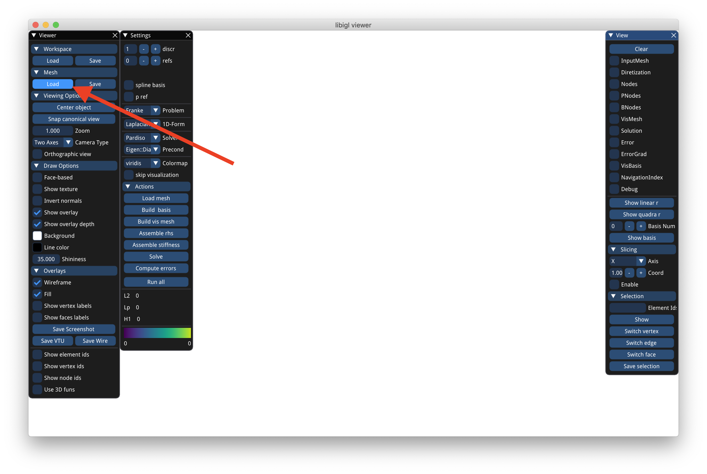
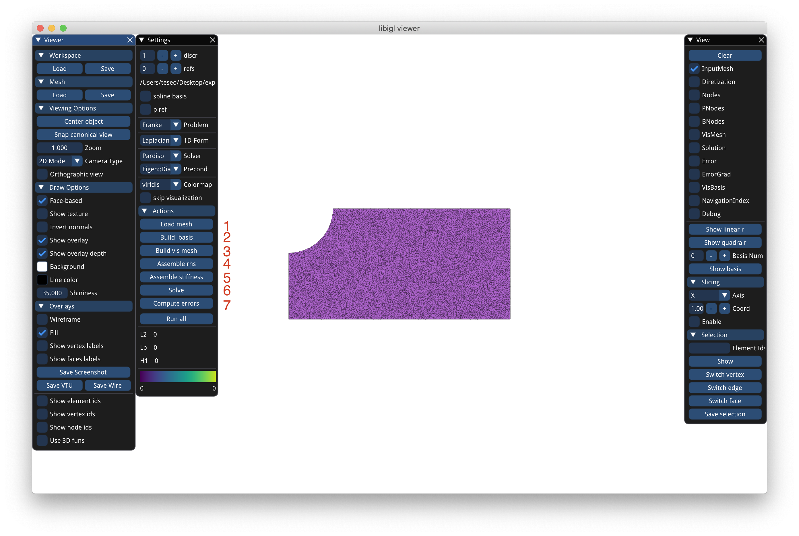
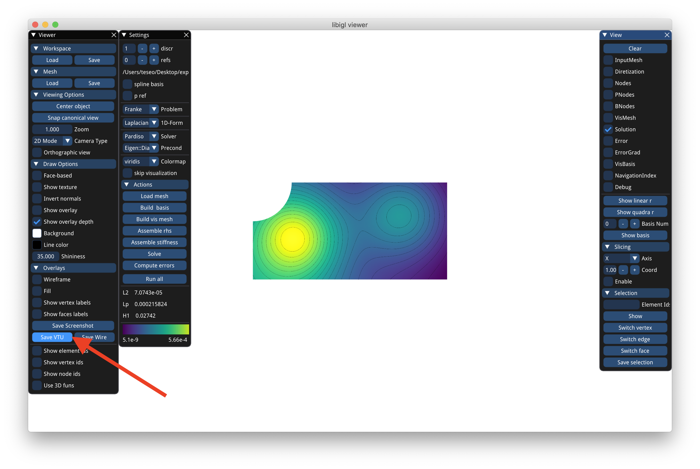
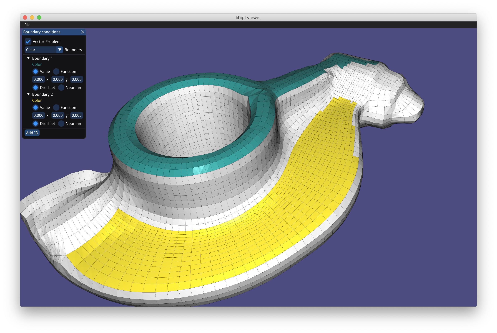
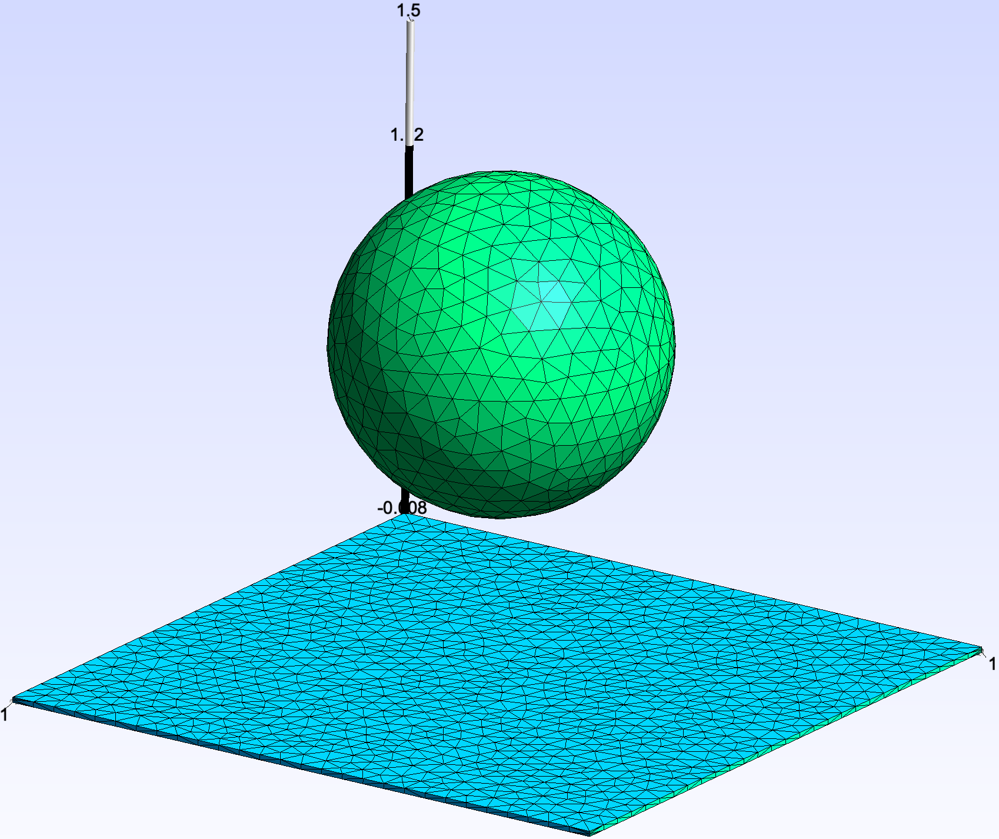
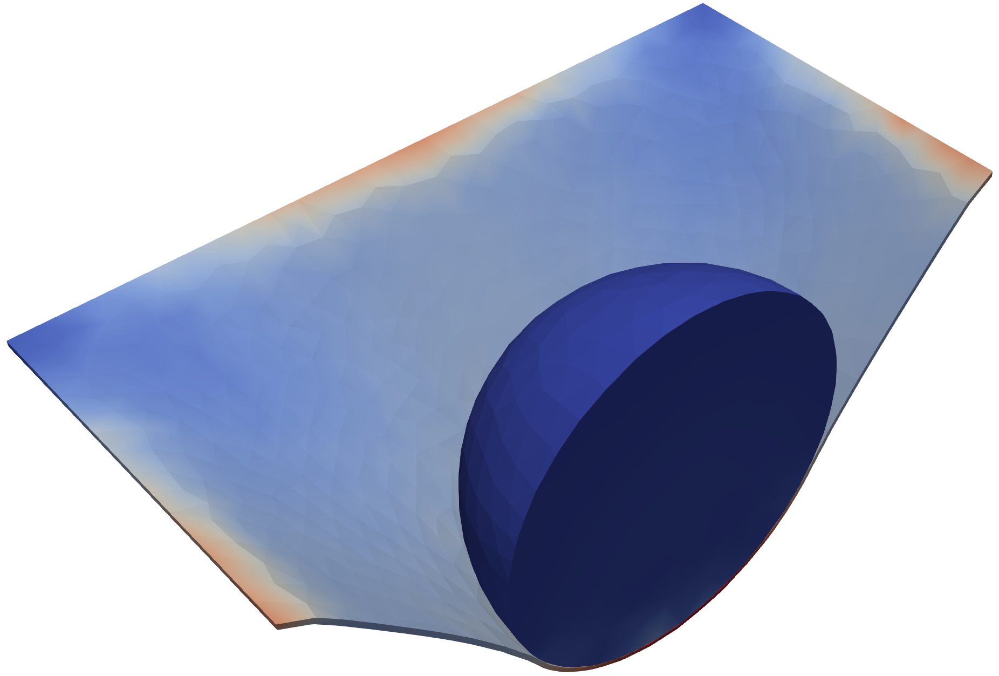

Tutorial¶
Here you can find the plate with hole mesh used in this tutorial.
UI¶
Start the program with PolyFEM_bin this will open the UI.
Press the load button to load a mesh

Then press the numbered button in sequence:
- Loads the mesh and normalized it
- Builds the FEM bases, you can change the order by changing discr. To enable pref or spline check the corresponding boxes (before pushing the button)
- Build a denser mesh for visualization purposes.
- Assembles the right-hand side of the problem. You can change the problem with the problem drop-down menu
- Assembles the matrix. You can change the formulation by changing the drop-down 1D nD form. The type of formulation depends on the problem. For instance, Franke works only with scalar formulations, while Elastic only with tensor problems.
- Solve problem solves the problem.
- You can compute the error for problems with given exact solutions. In case of no exact solution, the program will compute the norms of the solutions

At the end you can press save VTU to save the result.vtu file in the binary directory. This file can be opened with Paraview

JSON¶
To run the previous experiment with a json file create a run.json containing (refer to documentation for the full description):
{
"mesh": "<mesh.obj>",
"normalize_mesh": true,
"n_refs": 0,
"scalar_formulation": "Laplacian",
"discr_order": 1,
"use_spline": false,
"use_p_ref": false,
"output": "<stats.json>",
"problem": "Franke",
"export": {
"vis_mesh": "<result.vtu>",
}
}
Then run PolyFEM_bin --json run.json --cmd. You can omit the --cmd argument to open the UI with the parameters.
Boundary Conditions¶
For more advanced problems such as GenericTensor, TorsionElastic, or DrivenCavity the boundary conditions might be different for each boundary. For instance, for the TorsionElastic problem you need to specify which part is fixed and which part moves. Polyfem uses boundary tags to mark boundary primitives (edges in 2D and faces in 3D). By default:
- in 2D all edges which barycenter is close up to 1e-7 to the left side of the bounding box gets tag 1, the right side gets 3, bottom 2, and top 4. Any other boundary gets 7.
- in 3D the threshold is a bit larger (1e-2) and x-direction gets 1, 3, y-direction gets 2, 4, and z-direction gets 5, 6. Any other boundary gets 7.
You can also specify a file containing a list of integers per each edge/face of the mesh indicating the tag in the json value bc_tag.
If you want to run the real plate with hole problem you need to choose GenericTensor as problem, set the correct Lame constants in params, and specify the proper boundary conditions in problem_params. For this example, we want Neumann boundary condition of [100, 0] (a force of 100 in x) applied to the whole right side (pulling), so in the neumann_boundary array of problem_params we add an entry with id 3 and value [100, 0].
For the 2 Dirichlet is a bit more complicated because we want reflective boundary condition, that is we want to fix only one of the 2 coordinates. For instance, the right part of the mesh (id 1) needs to be fixed in x (or equivalent can move only in y-direction). To do so we add an entry to the dirichlet_boundary array with id 1 and value [0, 0], that is zero displacement, and specify which dimension these boundaries needs to be applied, in this case only the x-direction so dimension gets the value [true, false]. Similarly, the top part (id 4) gets dimension=[false, true].
{
...
"problem": "GenericTensor",
"params": {
"E": 210000,
"nu": 0.3
},
"problem_params": {
"neumann_boundary": [{
"id": 3,
"value": [100, 0]
}],
"dirichlet_boundary": [{
"id": 1,
"dimension": [true, false],
"value": [0.0, 0.0]
}, {
"id": 4,
"dimension": [false, true],
"value": [0.0, 0.0]
}]
}
}
Note that as value you can also specify an expression as string depending on x,y,z and Polyfem will evaluate that expression on the edge/face.
Since creating the file with association from boundary to id it is complicated, we also provide an application bc_setter to interactively color faces of 3D meshes (or edges of 2D meshes) and associate tags. By shift clicking you can color coplanar faces to assign and id (command or control click colors only one face). The UI also allow to specify the 3 values (for scalar problem only one) to assign to that boundary condition and choose between Dirichlet and Neumann. On save it will produce the txt file with the tags to be used in bc_tag and a json file to set the problem_params. Note, if you selected the vector problem you need to use "problem": "GenericTensor" otherwise "problem": "GenericScalar".

Selections, Multi-material, and Collisions [Beta]¶

The new release of PolyFEM support multi-material. For example if we want to simulate a sphere of radius 0.5m centered on [0,1,0] with material E=10^8, \nu=0.4, \rho=2000 falling on thin soft mat (E=10^6, \nu=0.4, \rho=1000) we need to set the body id. To set the body ids we can use selection, that is add this to the main json file:
"body_ids": [{
"id": 1,
"center": [0.0, 1, 0],
"radius": 0.6
}, {
"id": 2,
"axis": -2,
"position": 0.01
}]
"body_params": [{
"id": 1,
"E": 1e8,
"nu": 0.4,
"rho": 2000
}, {
"id": 2,
"E": 1e6,
"nu": 0.4,
"rho": 1000
}]
Selections can be used to set boundary conditions too. For our example we want to fix the 4 sides of the mat, that is set zero Dirichlet. thus we need to select faces that are left/right top/bottom and assign to them side-set 2 (we are again using axis-planes selections):
"boundary_sidesets": [{
"id": 2,
"axis": -1,
"position": -0.99
}, {
"id": 2,
"axis": 1,
"position": 0.99
}, {
"id": 2,
"axis": -3,
"position": -0.99
}, {
"id": 2,
"axis": 3,
"position": 0.99
}]
The final piece is to use a Generic tensor problem "problem": "GenericTensor" and specify boundary conditions and rhs (for the gravity):
"problem_params": {
"is_time_dependent": true,
"dirichlet_boundary": [{
"id": 2,
"value": [0, 0, 0]
}],
"rhs": [0, 9.81, 0]
}
Since this is a contact problem we need to enable collision, no other thing is needed: "has_collision": true, and run the simulation (the complete json script can be found here).
